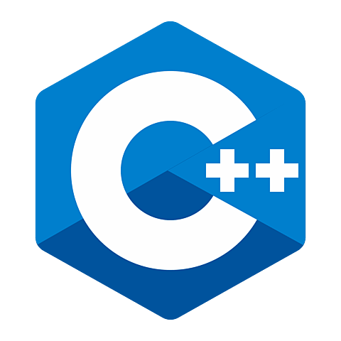
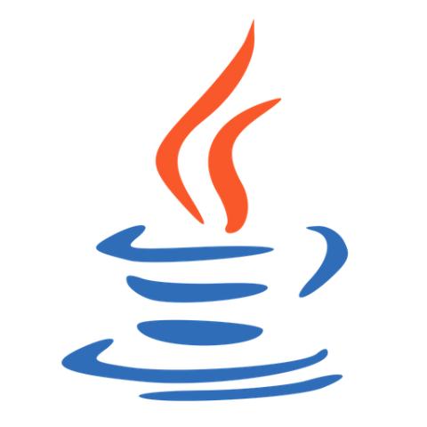
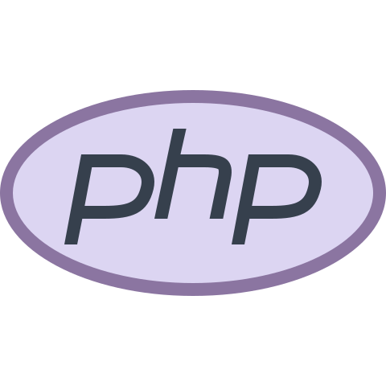

Hello world!!
Soy Tomás Hidalgo
Soy Tomás Hidalgo, desarrollador web
Soy un desarrollador web muy joven pero con mucha experiencia en el sector informático. Con tan solo 20 años, ya tengo conocimientos en más de 5 lenguajes de programación. Esto se debe a mi gran curiosidad por aprender cada dia algo nuevo y mejorar como profesional. También poseo más aptitudes en el mundo del software ya que estoy cursando 3º de Ingeniería Informática, lo que me ha permitido compaginarmelo con un grado de Desarrollo Web. Ambas titulaciones me han ayudado a crear mi propio camino para desarrollar diversas aplicaciones en múltiples lenguajes de programación. Descargar CVSkills

C++

Java
 Javascript
Javascript
 MySQL
MySQL

PHP
C